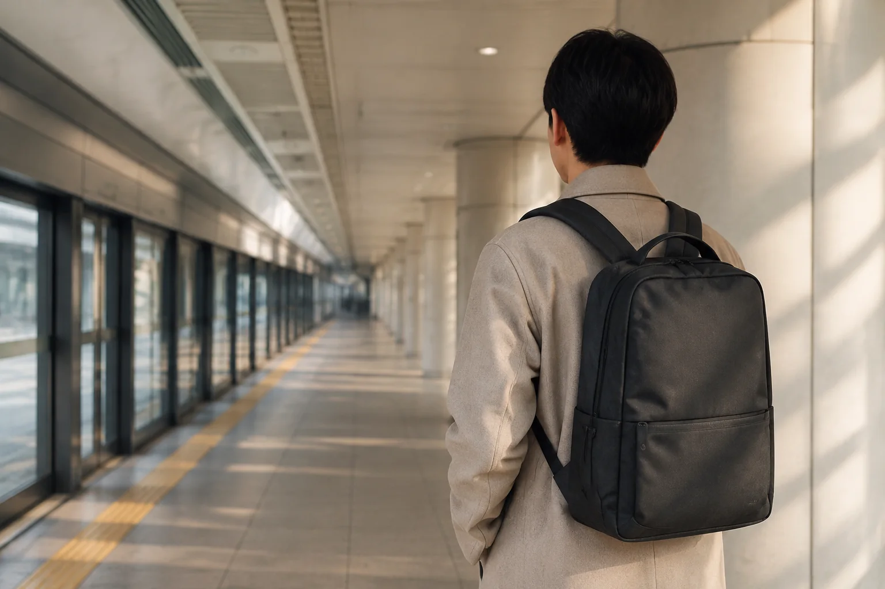
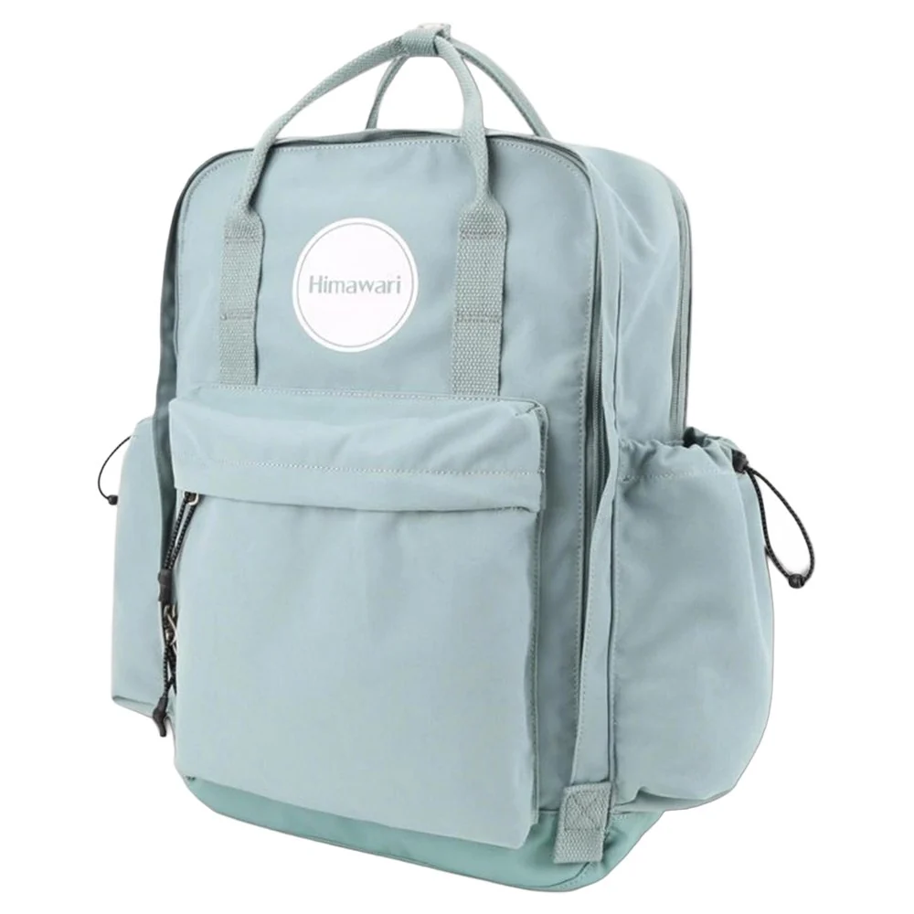

지하철 출근 가방을 메고 내리는 순간

지하철로 출퇴근하는 날에는 백팩을 메는 시간과 손으로 다루는 순간이 반복됩니다. 역에 들어갈 때 확인할 물건이 있고 환승할 때는 사람의 흐름에 맞춰 움직이며 회사에 도착하면 업무 도구를 꺼냅니다. 가방이 얼마나 담기는지만 보면 이 동작이 빠집니다. 자신의 출퇴근에서 언제 가방을 열고 어느 위치에서 다시 닫는지 생각해볼 만합니다. 반복해서 쓰는 가방은 평소 짐을 담은 모습과 이동할 때 차지하는 공간을 함께 봐야 합니다.
출근 짐을 펼쳐 매일 쓸 것과 특정 일정에만 추가할 것을 나눕니다. 노트북과 파일처럼 큰 물건을 먼저 정하고 작은 소지품의 위치를 생각합니다. 가방에 넣었을 때 앞면이나 옆면의 부피가 어떻게 달라지는지 실제로 살펴보세요. 빈 가방에서 얇아 보였던 면도 파우치를 채우면 모양이 달라질 수 있습니다. 자신의 짐을 넣은 상태에서 옆으로 돌거나 내려놓는 동작을 하면 제품 사진에서 보지 못한 조건을 확인할 수 있습니다.
입구에 도착하기 전에 찾을 것
교통카드나 출입 수단은 사용 직전에 가방 전체를 열지 않아도 되는 위치를 정합니다. 빠르게 꺼내려 한다고 외부에 그대로 드러내둘 필요는 없습니다. 본인이 위치를 기억하고 닫힌 곳에서 꺼낼 수 있는지가 중요합니다. 역의 출입구나 계단으로 들어가기 전에 필요한 것을 확인할 수 있는 자리를 생각하세요. 사람이 이동하는 곳에서 처음 가방을 다시 꾸리기보다 출발 전에 실제로 꺼내보면 동작이 맞는지 알아보기 쉽습니다.
교통카드를 사용한 뒤 회사 출입 수단을 다시 꺼내는 흐름이라면 두 물건의 위치가 혼동되지 않아야 합니다. 같은 파우치에 두더라도 구분할 수 있는 상태로 정리합니다. 사용 뒤에는 손에 계속 들고 다른 물건을 찾기보다 정한 위치로 돌아가게 하면 됩니다. 가방을 바꾸는 날에는 기존 위치의 이름보다 새 가방에서 꺼내는 동작을 확인하세요. 앞주머니라는 이름이 같아도 여는 방향과 깊이는 다를 수 있습니다.
기기와 서류를 함께 가져가는 경우에는 넓은 면과 단단한 소품의 접촉 위치를 봅니다. 제품에서 안내하는 수납 구조가 있다면 실제 물건과 대조하고, 충전 도구나 용기를 다른 묶음으로 정리할 수 있습니다. 가방을 메었다가 몸 앞으로 가져왔을 때 내용물이 어디로 움직이는지도 살펴보세요. 기기만 넣었을 때의 상태와 평소 모든 짐을 넣었을 때의 상태를 구분하면 여밈과 부피를 비교할 조건이 분명합니다.
이동용 백팩의 예시로 Himawari No.1089 제품 정보를 참고할 수 있습니다. 후보를 비교할 때는 자신의 업무 묶음과 개인 소지품을 담은 상태로 보아야 합니다. 교통카드와 출입 수단을 꺼내는 동작이 이어지는지, 가방을 손에 들거나 몸 앞에서 열 때 주변 짐이 따라 나오지 않는지를 확인합니다. 실제 출근의 순서를 적어두면 제품의 포켓 수를 세는 것보다 어떤 위치가 필요한지 구체적으로 질문할 수 있습니다.

혼잡한 구간에서 차지하는 공간
혼잡한 공간에서는 자신의 가방이 어느 방향으로 나와 있는지 살펴봅니다. 몸을 돌릴 때 뒤쪽 가방도 함께 움직이므로 주변 간격을 보고 천천히 이동합니다. 가방을 앞으로 가져오거나 손에 드는 방식이 필요하다면 실제 장소의 안내와 현재 여유 공간에 따라 판단하면 됩니다. 한 가지 자세를 모든 구간에 적용하기보다 타고 내리는 순간과 앉아 있는 순간을 구분할 수 있습니다. 손에 든 가방의 끈이 다른 물건에 걸리지 않는지도 봅니다.
열차에서 물건을 꺼내야 한다면 멈출 수 있는 상황에서 필요한 묶음만 다룹니다. 이어폰이나 연락 도구가 다른 소지품과 엉켜 있다면 출발 전에 따로 정리할 수 있습니다. 가방을 크게 열어 내용물을 펼칠 공간이 없을 수 있으므로 꺼내는 순서를 단순하게 정하는 것입니다. 개인 소지품을 임시로 내려놓았다면 이동 전에 회수할 범위가 늘어납니다. 어디에 무엇을 두었는지 확인한 다음 여밈을 닫으면 됩니다.
비가 내리는 날에는 출근할 때와 돌아올 때의 물건 상태도 달라집니다. 젖은 우산이나 사용한 물건을 어디에 둘지 미리 생각하고 종이와 전자기기에 직접 닿지 않게 운반할 묶음을 정합니다. 평소 빈자리였던 곳에 임시로 넣는다면 기존 자료가 눌리는지 봅니다. 별도로 손에 들 짐이 생겼을 때는 백팩 외의 물건까지 개수에 포함할 수 있습니다. 이동 중 계속 같은 배치를 유지하려 하기보다 그때의 상태에 맞춰 조정하면 됩니다.
회사에서 꺼낼 업무 묶음
회사에 도착하면 출입에 쓴 확인 수단부터 정한 곳에 돌려놓습니다. 가방을 둘 위치와 작업할 장소가 다르면 필요한 업무 도구만 먼저 꺼낼 수 있는 구성이 도움이 됩니다. 기기를 꺼낸 뒤 충전 도구와 파일을 찾는 순서도 실제 업무 방식에 맞게 정합니다. 책상 위에 꺼낸 물건과 가방 안에 남은 물건을 구분하면 퇴근할 때 회수할 범위가 보입니다. 연결한 도구가 있다면 책상 외의 위치도 함께 확인해야 합니다.
퇴근 준비에서는 오늘 추가된 물건을 먼저 봅니다. 받은 자료나 개인 용기, 다른 장소에서 사용할 물건이 늘었다면 기존의 교통카드 위치가 밀리지 않는지 살펴보세요. 업무 도구를 넣은 뒤 가방의 여밈과 부피를 다시 확인하고 이동에 필요한 것을 찾을 위치에 남깁니다. 회사 자료를 집으로 가져갈 필요가 있는지는 업무 안내에 따라 판단합니다. 오전 가방 그대로라고 생각하지 않고 현재 짐을 확인하면 귀가에서도 같은 동작을 이어가기 쉽습니다.
집에서는 임시 종이와 사용한 물건을 꺼내고 다음 출근의 일정과 대조합니다. 출입 수단과 열쇠를 가방에 남길 계획이라면 원래 위치로 돌아왔는지 봅니다. 지하철에서 불편했던 점이 부피 때문인지 소지품을 찾는 순서 때문인지 나누어 기록할 수 있습니다. 새 가방을 검토할 때도 그 질문을 기준으로 실제 짐과 제품 정보를 대조하면 됩니다. 출퇴근을 반복할수록 필요한 것은 새로운 칸의 수보다 찾을 위치와 메고 내리는 동작의 연결입니다.